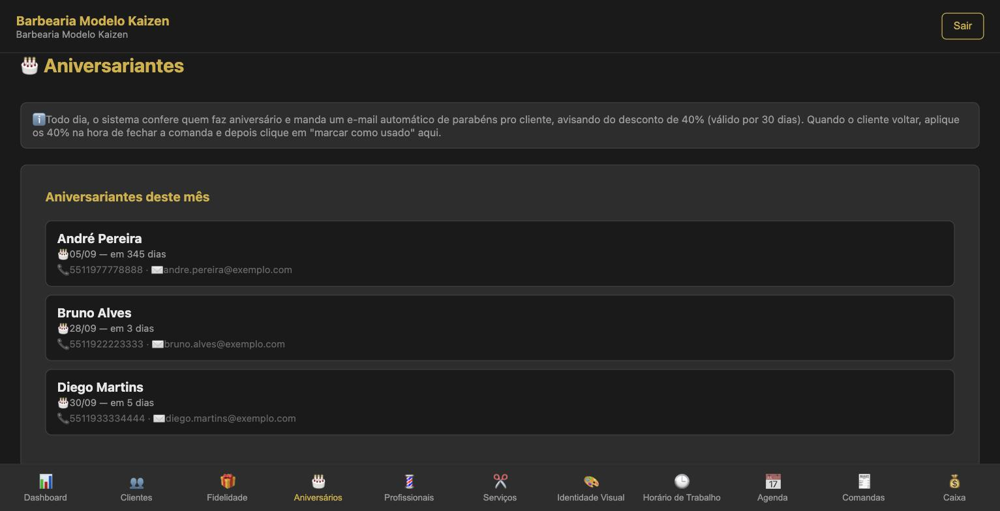

Sua base de clientes — do WhatsApp, do caderno ou de uma planilha — entra no Kaizen Flow de uma vez só, por um arquivo CSV, sem cadastrar cliente por cliente. Nenhum cliente duplicado entra: o sistema confere pelo telefone e pelo e-mail.
Passo 1 — Baixe o modelo
Na aba Clientes, logo abaixo do formulário "Novo Cliente", fica o bloco Importar clientes (CSV). Clique em Baixar modelo CSV: vem o arquivo modelo-importar-clientes.csv, com as colunas certas e uma linha de exemplo.
Passo 2 — Preencha a planilha
Use o Google Planilhas (grátis, no celular ou no computador): abra o modelo, preencha uma linha por cliente e baixe em Arquivo → Fazer download → Valores separados por vírgula (.csv).
Prefere o Excel? Também funciona: salve como CSV — com vírgula ou ponto e vírgula, o sistema reconhece os dois.
| Coluna | Obrigatória? | Como preencher |
|---|---|---|
| Nome | Sim | Nome como você chama o cliente |
| Telefone | Sim | Com código do país e DDD: 5511999999999. Espaços, parênteses e traços são removidos sozinhos |
| Não | Necessário para o cliente receber os e-mails automáticos, como o de parabéns no aniversário | |
| Data de Nascimento | Não | dd/mm/aaaa (ex.: 12/05/1990) ou AAAA-MM-DD |
| Data da Primeira Visita | Não | dd/mm/aaaa ou AAAA-MM-DD. Em branco, vira a data de hoje |
O nome das colunas aceita variações: "Celular", "WhatsApp" ou "Fone" funcionam no lugar de "Telefone"; "Cliente" no lugar de "Nome"; "Aniversário" no lugar de "Data de Nascimento".
O arquivo pronto fica assim:
Nome,Telefone,Email,Data de Nascimento,Data da Primeira Visita Ana Silva,5511999999999,ana@email.com,12/05/1990,10/01/2024 Carlos Souza,5511988887777,,30/11/1985, João Lima,5511977776666,joao@email.com,,02/08/2023
Passo 3 — Envie e confira a prévia
No bloco Importar clientes, clique em Escolher arquivo e selecione o CSV. Nada é importado ainda: o sistema primeiro mostra uma prévia.
| A prévia mostra | O que significa |
|---|---|
| X pronto(s) para importar | Clientes novos, que vão entrar |
| X já existente(s) (ignorado(s)) | Mesmo telefone ou mesmo e-mail de um cliente que já está no sistema, ou repetido no próprio arquivo |
| X sem nome ou telefone (ignorado(s)) | Linhas incompletas; corrija na planilha e envie de novo, se quiser |
Abaixo aparecem os primeiros 8 clientes (nome, telefone e e-mail) para você conferir se as colunas foram lidas certo.
Passo 4 — Confirme a importação
Com a prévia certa, clique em Confirmar importação (X). Se algo estiver estranho, clique em Cancelar, corrija a planilha e envie de novo.
No fim aparece "X cliente(s) importado(s) com sucesso" e a lista de clientes já se atualiza. Se algum cliente der conflito, só ele fica de fora — o resto entra normalmente, e a mensagem diz quantos não puderam ser importados.
Sua lista está no WhatsApp, no caderno ou em PDF
O sistema só lê CSV, porque cada caderno ou PDF tem um formato diferente. O caminho é passar nome e telefone para a planilha-modelo e seguir os Passos 3 e 4 — a parte repetitiva, cadastrar um por um no sistema, continua eliminada.
| Onde está hoje | Como levar para a planilha |
|---|---|
| Contatos do WhatsApp | Copie nome e número de cada conversa de cliente; comece pelos que vieram nos últimos meses |
| Caderno ou agenda de papel | Digite direto no Google Planilhas pelo celular, uma linha por cliente |
| Planilha antiga (Excel, Google) | Copie as colunas de nome e telefone e cole nas colunas certas do modelo |
| PDF de outro sistema | Copie e cole as colunas do PDF na planilha e confira se nome e telefone ficaram em colunas separadas |
Não precisa esperar a base inteira: importe o que já tem e mande o resto depois, sem risco de duplicar.
O que já funciona depois de importar
Cada cliente importado vale o mesmo que um cadastrado à mão, a partir do primeiro dia:
| Recurso | O que acontece com o cliente importado |
|---|---|
| Agenda e página pública | Já pode ser agendado pelo nome |
| Aniversariantes | Quem tem data de nascimento aparece na lista do mês e, com e-mail, recebe os parabéns automáticos com o desconto de aniversário |
| Fidelidade | Começa a somar pontos a cada atendimento realizado no sistema |
| Clientes Ausentes | Entra no acompanhamento a partir do primeiro atendimento concluído no sistema |

O que vem da base antiga é o cadastro: nome, telefone, e-mail, aniversário e data da primeira visita. Atendimentos e pontos anteriores à importação não são trazidos — a contagem de fidelidade começa do zero no Kaizen Flow.
Deu problema?
| Mensagem ou sintoma | Causa provável | Solução |
|---|---|---|
| "Não encontrei as colunas Nome e Telefone no arquivo" | Cabeçalho apagado ou com outro nome | Mantenha a primeira linha do modelo |
| "O arquivo precisa ter uma linha de cabeçalho e pelo menos um cliente" | Planilha vazia ou só com o cabeçalho | Preencha pelo menos uma linha abaixo do cabeçalho |
| Muitos "já existente(s)" | Esses clientes já estão cadastrados, ou o mesmo telefone aparece duas vezes no arquivo | Nada a fazer: ninguém é duplicado |
| "Cliente(s) com data em formato não reconhecido" | Data escrita de outro jeito (ex.: 12/05/90 ou "maio de 1990") | O cliente entra sem essa data; corrija para dd/mm/aaaa e edite o cadastro dele depois |
| "X não puderam ser importados" | Conflito de e-mail ou telefone com outro cliente | Confira esses clientes na lista e cadastre à mão, se precisar |
Kaizen Flow · Bônus 3 — Migração Sem Perder Histórico · Material exclusivo para assinantes.